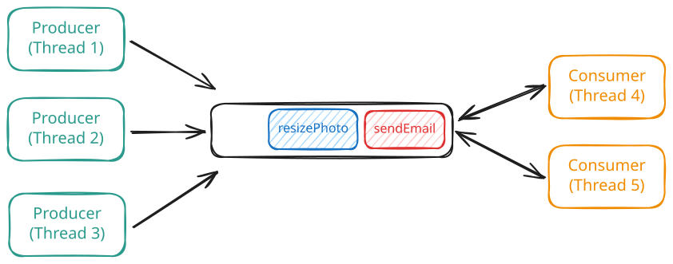
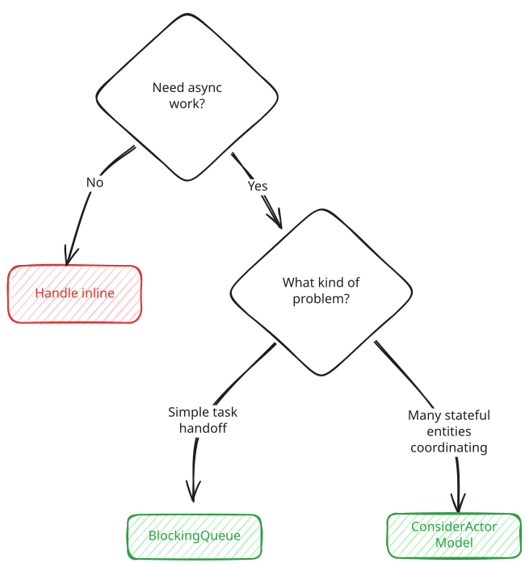

Concurrency
Coordination
Learn how to coordinate work between threads.
🗓️ Coordination is about threads communicating and handing off work. One thread produces tasks, another consumes them. A service sends a request, another service processes it. How do independent execution paths signal each other without burning CPU or corrupting state?
The Problem
Imagine you're building a task scheduler for a web app. Some work simply doesn't belong on the request path. It takes too long, and if you run it inline, every API call ends up blocked.
So you push that work into the background. Users sign up and need welcome emails. They upload profile photos that need resizing. Admins request monthly reports that take minutes to generate. API handlers enqueue tasks, and a pool of worker threads processes them asynchronously.
Conceptually, the architecture is simple: API handlers produce tasks, workers consume them, and something sits in between to coordinate the handoff.

Coordination
When load is steady, this works well, but cracks start to show on the edges.
First, consider what happens when workers are ready to run, but there's no work to do. The most naïve approach is to just keep checking for work until something shows up.
Busy-waiting (anti-pattern)
Python
while True:
if queue:
task = queue.pop(0)
execute(task)
This is busy-waiting, and it can be disastrous. Each worker spins in a tight loop, burning CPU while doing no useful work. With eight workers on an eight-core machine, you can consume 100% of your compute capacity just checking an empty queue. When tasks finally arrive, there's no CPU left to run them.
You might try to fix this by sleeping when there's no work.
Sleep-polling (anti-pattern)
Python
import time
while True:
if queue:
task = queue.pop(0)
execute(task)
else:
time.sleep(0.1)
That reduces CPU usage, but now you've traded waste for latency. A task that arrives 1 ms after a worker goes to sleep waits nearly 100 ms before being processed. Sleep longer and the system feels sluggish. Sleep shorter and you're back to burning CPU.
Now flip the problem around. What happens when producers are faster than consumers?
Say a marketing email goes out and 50,000 users click a link at once. Each request enqueues background work.
09:00:00.000 - Queue size: 0
09:00:00.100 - Queue size: 5,000
09:00:00.200 - Queue size: 12,000
09:00:00.300 - Queue size: 23,000
09:00:00.400 - Queue size: 38,000
09:00:00.500 - Queue size: 50,000Your eight workers can process maybe 100 tasks per second, which means draining a queue of thousands takes minutes. The delay itself isn't what kills you though. Memory is the real problem. Every single task sitting in that queue is an object on the heap consuming memory. If the queue is unbounded and keeps accepting new tasks, it just grows and grows until eventually you hit an OutOfMemoryError. When that happens, the entire service crashes. Not just your background processing, but the whole thing. Your API goes down and everything stops working.
This is a coordination problem. How do threads communicate and sequence their work? They need to signal each other ("work is ready"), wait efficiently without burning CPU, and handle the case where one side is faster than the other. Three things need solving:
- Efficient waiting — consumers should sleep when there's no work, waking immediately when work arrives
- Backpressure — producers should slow down when consumers can't keep up, preventing memory exhaustion
- Thread safety — the coordination mechanism itself must handle concurrent access without corruption
The Solutions
There are two fundamentally different approaches to solving these problems. Shared state coordination uses data structures that multiple threads access directly, like a queue that producers push to and consumers pull from. Message passing coordination avoids shared state entirely. Each component has its own inbox and communicates by sending messages.
Let's look at both.
Shared State Coordination
The most common approach to coordination uses shared data structures. Threads communicate by reading and writing to the same memory. A producer adds an item to a queue, a consumer removes it. The queue is the shared state, and synchronization primitives like locks and condition variables ensure threads don't step on each other.
Wait/Notify (Condition Variables)
Wait/notify is a low-level primitive for thread coordination that is useful to know, but is unlikely to be used directly in an interview. If you're looking to "cut to the chase," feel free to skip this section and jump to Blocking Queues.
Remember the polling problem from the intro? Workers spinning in a loop checking if there's work burns CPU without doing anything useful. We need workers to actually sleep when there's nothing to do, then wake up the instant work arrives. That's what condition variables provide.
The pattern works like this. You have a lock protecting some shared state and a condition variable attached to that lock. When a thread needs to wait for a condition to become true, it calls wait on the condition variable. Two things happen atomically.
- The thread releases the lock and goes to sleep.
- The thread stops consuming CPU entirely. It's completely parked until explicitly woken.
When another thread changes the shared state, it signals the condition variable to wake waiting threads. Those threads have to reacquire the lock before they can proceed. Once a thread gets the lock back, it wakes up and continues executing.
The specific API varies by language. Java calls them wait/notify methods on the lock object. C++ has std::condition_variable with wait/notify methods. Python has threading.Condition with wait/notify. Go uses channels which hide this pattern entirely. The underlying mechanism is the same across all of them.
Here's the pattern:
wait_notify.py
Python
with condition:
while not condition_is_met():
condition.wait() # Releases lock, sleeps until notified
do_work()
condition.notify_all() # Wakes all waiting threads
Python's threading.Condition combines a lock and condition variable. The with statement handles lock acquisition. wait() releases the lock and sleeps. notify_all() wakes all waiting threads. The lock is reacquired before wait() returns.
The while loop is essential. When a thread wakes from wait(), it must recheck the condition because another thread might have already consumed what it was waiting for between when this thread was notified and when it reacquired the lock. The JVM can also wake threads spuriously without any notify() call, so you always need to verify the condition still holds.
The benefit over polling is enormous. With sleep-based polling, workers either waste CPU (short sleep) or have high latency (long sleep). With wait/notify, workers consume zero CPU when idle and wake immediately when work arrives.
Challenges
The trickiest part about condition variables is deciding whether to wake one thread or all threads. Here's why it matters.
Say you have a queue with both producers and consumers waiting on the same condition variable. Three producers are blocked waiting for space in the queue. Two consumers are blocked waiting for items. A consumer finishes processing an item and frees up space. It signals the condition variable to wake one waiting thread.
Which thread wakes up? The runtime picks one arbitrarily. It might pick another consumer, even though consumers need items, not space. That consumer wakes up, sees the queue is still empty, and goes back to sleep. Meanwhile the producers that actually need to know about the free space stay asleep and nobody makes progress.
The safe fix is to wake all threads instead of just one. Now when space frees up, all waiting threads wake up. The consumers see the queue is still empty and go back to sleep. The producers see space is available, one of them grabs it, and work continues.
But waking all threads has a cost. If you have 50 threads waiting and only one can actually proceed, you just woke 49 threads for nothing. They all compete for the lock, check the condition, see it's not met, and go back to sleep. That's a lot of wasted context switches.
The better solution is to use separate condition variables. One for "queue not empty" that only consumers wait on. Another for "queue not full" that only producers wait on. Now when a consumer frees up space, it signals the "not full" condition, waking only producers. When a producer adds an item, it signals the "not empty" condition, waking only consumers and we no longer have any wasted wakeups.
Blocking Queues
Wait/notify gives you the building blocks for thread coordination, but you rarely implement it from scratch. Most languages provide a blocking queue that does all the work for you.
A blocking queue is just a thread-safe queue with special behavior when it's empty or full. When you try to remove an item from an empty queue, the call blocks instead of returning immediately. Your thread goes to sleep using condition variables under the hood. When another thread adds an item, it wakes you up and you get the item. Same thing in reverse when the queue is full. Trying to add an item blocks until space frees up.
This is exactly what you need for producer-consumer problems. Producers call put to add items. Consumers call take to remove items and the queue handles all the synchronization, all the waiting, all the signaling. Backpressure comes built-in because producers block when the queue fills up. Efficient waiting is automatic because consumers sleep when the queue is empty.
Blocking queues also appear in resource pooling (see Scarcity article) where they store actual resource objects instead of tasks. Here we focus on their role as a communication channel between threads—coordinating work handoff.
Here's the task scheduler from the intro, now with working code:
task_scheduler.py
Python
import queue
from typing import Callable
class TaskScheduler:
def __init__(self):
self._queue = queue.Queue(maxsize=1000)
def submit_task(self, task: Callable) -> None:
self._queue.put(task) # Blocks if queue is full
def worker_loop(self) -> None:
while True:
task = self._queue.get() # Blocks if queue is empty
task()
Python's queue.Queue provides blocking operations. put() blocks if the queue is full, get() blocks if empty. Use maxsize to bound the queue. The queue handles all thread synchronization internally.
The blocking remove operation blocks when the queue is empty, using the wait/notify pattern under the hood. The queue handles all the synchronization, so multiple producers and consumers can operate concurrently without corrupting state.
Python's get() blocks when the queue is empty and returns once an item becomes available. Without arguments, it blocks indefinitely until an item is available.
In interviews, BlockingQueue is your default answer for producer-consumer problems. "I'll use a blocking queue so consumers wait efficiently and the synchronization is handled for me."
Challenges
The biggest mistake is creating an unbounded queue. LinkedBlockingQueue without a capacity argument has no size limit. This brings back the memory exhaustion problem from the intro. Always pass a capacity: new LinkedBlockingQueue<>(1000).
How do you choose the capacity? A common approach is to size the buffer based on expected burst tolerance. If your workers can handle 100 tasks per second and you want to absorb a 10-second traffic spike without blocking producers, you need a buffer of 1,000 tasks. Too small and producers block frequently, hurting throughput. Too large and you're back to using excessive memory under load.
What happens when the queue fills up? You have three options:
- Block producers with put(). Use this for internal pipelines where slowing down is acceptable. A batch job feeding a processing stage can wait.
- Timeout and reject with offer(timeout). Use this on request paths where you can't stall. Return a 503 or "try again later" to the user.
- Drop and log with offer() (no timeout, returns false immediately). Use this for lossy workloads like analytics events where dropping under load is acceptable.
One detail worth understanding is InterruptedException. Both put() and take() throw this exception, which means you have to handle it. This exception gets thrown when another thread interrupts your thread while it's blocked waiting. The worst thing you can do is catch it and ignore it. If you do that, your code swallows the signal that someone is trying to stop your thread. Either let the exception propagate up by declaring it in your method signature, or if you must catch it, restore the interrupt status by calling Thread.currentThread().interrupt() so code further up the call stack knows the thread was interrupted.
Graceful shutdown is another common interview follow-up. Your workers are sitting in take() blocked forever waiting for tasks. How do you stop them when the application shuts down? You have three options.
1. Interrupt the worker threads. When you interrupt a thread blocked in take(), it wakes up and throws InterruptedException. Your worker catches this, breaks out of its loop, and exits cleanly. This is the simplest approach.
2. Use poll with a timeout. Instead of blocking forever with take(), use poll(timeout). The worker waits up to the timeout period for a task. If nothing shows up, poll returns null. This gives you a chance to check a shutdown flag periodically. When shutdown is requested, set the flag and workers will notice within one timeout period and exit.
3. Use the poison pill pattern. Create a special sentinel task that means "shut down." When shutdown is requested, submit one poison pill per worker to the queue. Each worker processes tasks normally until it pulls a poison pill. When it sees the poison pill, it exits its loop and shuts down. This works well when you can't interrupt threads or don't want to use timeouts.
Message Passing Coordination
There's a fundamentally different way to think about coordination. Instead of multiple threads accessing shared data structures, what if each thread had its own private state and communicated only by sending messages?
This is the actor model. An actor is an independent unit of computation with three properties: it has a mailbox (a queue of incoming messages), it processes messages one at a time, and it can send messages to other actors. No shared state. No locks. Each actor is single-threaded internally, so there's no concurrent access to worry about within an actor.
The model originated in the 1970s but gained practical traction with Erlang, which built an entire language and runtime around it. Today you'll find actor implementations in Akka (Scala/Java), Orleans (.NET), and libraries for most mainstream languages. Go's goroutines with channels are heavily influenced by similar ideas, though they're not strictly actors.
The Actor Model
An actor is surprisingly simple. It's just an object with a mailbox and a message handler. When you send a message to an actor, the message goes into its mailbox. The actor pulls messages from the mailbox one at a time and processes them. Because only one message is processed at a time, the actor's internal state never faces concurrent access.
actor_example.py
Python
import threading
import queue
from abc import ABC, abstractmethod
class Actor(ABC):
def __init__(self):
self.mailbox = queue.Queue()
self.running = True
self.thread = threading.Thread(target=self._run)
self.thread.start()
def _run(self):
while self.running:
try:
message = self.mailbox.get(timeout=0.1)
self.on_receive(message)
except queue.Empty:
continue
def send(self, message):
self.mailbox.put(message)
@abstractmethod
def on_receive(self, message):
pass
def stop(self):
self.running = False
self.thread.join()
Python's actor uses queue.Queue for the mailbox and runs on a dedicated thread. The timeout in get() allows the thread to check the running flag periodically for clean shutdown. Production systems often use libraries like Pykka or async frameworks.
Notice how there are no locks in the message handler? The actor processes one message at a time, so onReceive() never runs concurrently with itself. Any state the actor maintains is accessed sequentially. You can have mutable fields, counters, caches, whatever you need, without synchronization inside the actor's logic. The mailbox itself still needs synchronization when multiple threads send messages to the same actor—the BlockingQueue uses locks internally to handle concurrent send() calls.
Actors centralize all synchronization at a single, well-defined boundary (the mailbox) and keep it out of your business logic. You're trading scattered locks throughout your code for one proven queue implementation handling all the concurrent access.
Compare this to shared state coordination. With a blocking queue, multiple worker threads pull from the same queue and might process tasks that touch the same data. You need locks or other synchronization to protect that shared data. With actors, each actor owns its data exclusively. Coordination happens through message passing, not shared memory.
Here's the email service from earlier, reimagined with actors:
email_actor.py
Python
class EmailActor(Actor):
def __init__(self):
super().__init__()
self.email_client = EmailClient()
def on_receive(self, request):
self.email_client.send(request.to, request.subject, request.body)
# Usage: no shared state, no locks needed
class SignupHandler:
def __init__(self, user_repository):
self.email_actor = EmailActor()
self.user_repository = user_repository
def handle_signup(self, request):
user = self.user_repository.save(User(request.email))
# Send message to actor - returns immediately
self.email_actor.send(EmailRequest(
to=user.email,
subject="Welcome!",
body="Thanks for signing up..."
))
The actor pattern cleanly separates the request path from background processing. handle_signup() returns immediately after sending the message. The actor processes emails at its own pace, isolated from the web request thread.
The structure looks similar to the blocking queue version, but the mental model is different. With blocking queues, you think about shared data and synchronization. With actors, you think about messages and ownership. The actor owns the email client. Nobody else touches it. Communication is explicit—everything happens through send().
When to Use Actors
Actors shine when you have many independent entities that occasionally need to communicate. Think of a chat system where each user session is an actor, a game server where each player or game room is an actor, or a trading system where each order book is an actor. Each entity has its own state, processes events sequentially, and messages other entities when needed.
The model also scales well. Because actors don't share state, you can distribute them across machines. Send a message to an actor on another server the same way you'd send to a local one. Erlang and Akka build entire distributed systems on this property.
But actors aren't always the right choice. For simple producer-consumer problems where you just need to hand work from one thread to another, a blocking queue is simpler and more direct. You don't need the abstraction of actors when a queue will do. Actors add conceptual overhead—you're now thinking about message types, actor lifecycles, and message delivery guarantees.
The rule of thumb is if your problem is "process these tasks in the background," use a blocking queue. If your problem is "coordinate many independent entities with their own state," consider actors.
In interviews, blocking queues are still the default answer for producer-consumer. But if the interviewer asks about alternative approaches or you're designing something with many stateful entities (game servers, chat systems, trading platforms), actors are worth mentioning. Say: "Another approach is the actor model, where each entity processes its own messages sequentially. That eliminates shared state within each actor."
Challenges
The actor model trades one set of problems for another. You no longer worry about locks and race conditions on shared state, but you gain new concerns.
Mailbox overflow. Just like blocking queues, actor mailboxes can fill up if producers are faster than the actor can process. Most frameworks let you configure mailbox size and overflow behavior—drop messages, block senders, or apply backpressure.
Message ordering. Messages from actor A to actor B arrive in order. But if actors A and C both send to B, the interleaving is undefined. If your logic depends on global ordering across senders, actors get complicated.
Debugging. When something goes wrong in a system of actors, the bug might be in how messages flow rather than in any single piece of code. Tracing a request through multiple actors is harder than stepping through a single call stack.
Request-response patterns. Actors communicate asynchronously. If you need to send a message and wait for a reply, you have to build that pattern yourself—send a message with a callback address, then wait for the response message. Some frameworks provide "ask" patterns that hide this complexity.
Common Problems
Producer-consumer doesn't appear in interviews as an abstract data structure problem. It shows up disguised as practical systems where some work needs to happen asynchronously. Once you recognize these problems, you'll know when to reach for a blocking queue or an actor.
Process Requests Asynchronously
This is the most common coordination pattern in interviews. Users make requests that need work done, but some of that work is slow and doesn't need to happen on the request path. You want to respond to the user immediately while handling the heavy lifting in the background.
The API handler is the producer. It receives the request, does the minimum work needed to respond to the user, then hands off a task for background processing. Workers or actors are the consumers. They process tasks asynchronously.
Consider an email service. When a user signs up, you need to send them a welcome email. Connecting to the email server and sending the message takes 500ms. If you do this inline, every signup request takes half a second to respond. Users see a loading spinner and wonder if something broke. Instead, you hand off the email task and respond immediately. Background processing handles sending.
With a blocking queue:
email_service.py
Python
import queue
from dataclasses import dataclass
@dataclass
class EmailTask:
recipient: str
template: str
data: str
class EmailService:
def __init__(self):
self._email_queue = queue.Queue(maxsize=10000)
# API handler (producer)
def signup(self, email: str, name: str) -> None:
# Fast: Save user to database
user_repository.save(email, name)
# Fast: Enqueue background work
self._email_queue.put(EmailTask(email, "welcome", name))
# Return immediately - user sees instant response
# Worker thread (consumer)
def email_worker(self) -> None:
while True:
task = self._email_queue.get()
# Slow: Connect to email server and send
email_client.send(task.recipient, task.template, task.data)
Python's queue.Queue handles all the threading details. put() blocks if full, get() blocks if empty. For web frameworks, you'd typically run workers in separate threads or use an async task queue like Celery for production workloads.
The signup handler is now fast. It saves the user to the database, creates an email task object, puts it in the queue, and returns success. The whole thing takes milliseconds. The user sees their success message immediately without waiting for the email to actually send.
Meanwhile, your worker threads are sitting in the background pulling tasks from the queue. One of them grabs the email task and calls the email service to actually send it. If the email service is slow, no problem. That worker blocks but the API handler is long gone. If the email service is down entirely, the task just stays in the queue until a worker can process it or you implement retry logic. The user never sees any of this. They got their success response already.
Examples
The same structure appears across many interview problems.
Image Upload Service: Users upload profile photos. The photo needs resizing, compression, and upload to S3. This takes seconds. The upload API saves the original to a temp location, enqueues a processing task, and returns success immediately. Workers pull tasks, resize images, upload to S3, and update the database with the new URLs.
Payment Processing: A user completes checkout. You need to charge their card, send a receipt email, update inventory, and create a shipping label. These operations involve external services that are slow or can fail. Save the order, enqueue a fulfillment task, respond to the user. Workers handle the multi-step process. One failure doesn't block the whole flow.
Report Generation: An admin requests a monthly report with millions of rows. Generating it takes 10 minutes. The HTTP request times out after 30 seconds. Save a "pending" report record, enqueue a generation task, and return "Your report is being generated." Workers pull tasks, run the query, generate the CSV, upload to S3, and mark the report complete. The admin polls or gets notified when ready.
When you see "process this after the request completes" or "this takes too long to do inline," reach for coordination. Say: "I'll use a blocking queue to decouple the API from the background work. The handler enqueues tasks and returns immediately. Workers process asynchronously."
Handle Bursty Traffic
Bursty traffic is when load comes in waves instead of steadily. A news site gets a spike when breaking news hits. An e-commerce site sees a surge during Black Friday. A ticket seller gets hammered when concert tickets go on sale. Most of the time your system handles 100 requests per second comfortably, but occasionally it gets 10,000 requests per second for a few minutes.
The naive approach is to scale workers to handle peak load. If peak is 10,000 requests per second and each worker handles 10 per second, you need 1,000 workers. But those workers sit idle 99% of the time, burning money on servers you don't need.
Coordination solves this with a buffer. You size workers for normal load, say 100 workers. When the burst hits, the queue absorbs the spike. Requests pile up in the queue while workers churn through them at their normal rate. After the burst ends, workers drain the queue and everything returns to normal. You've smoothed a 100x spike into steady processing with a bounded queue.
Here's what it looks like:
ticket_service.py
Python
import queue
from dataclasses import dataclass
@dataclass
class PurchaseRequest:
user_id: str
event_id: str
quantity: int
class TicketService:
def __init__(self):
# Sized for 10-second burst at 10,000 req/s
self._purchase_queue = queue.Queue(maxsize=100000)
# API handler (producer) - handles bursts
def purchase_ticket(self, user_id: str, event_id: str, quantity: int) -> None:
request = PurchaseRequest(user_id, event_id, quantity)
# Enqueue request - returns immediately even during spike
try:
self._purchase_queue.put(request, timeout=0.1)
except queue.Full:
raise ServiceUnavailableException("Too many requests, try again")
# Worker pool sized for normal load (100 workers)
def purchase_worker(self) -> None:
while True:
request = self._purchase_queue.get()
# Process at normal rate - database, payment, inventory
process_purchase(request)
put(request, timeout=0.1) raises queue.Full if the queue doesn't have space within the timeout. This gives you backpressure without blocking the request indefinitely. The exception can be caught and converted to an HTTP 503 response.
During normal load, the queue stays near empty. Requests flow through immediately. During a burst, the queue fills up but doesn't overflow. Workers keep processing at their sustainable rate. Users might wait a few extra seconds for confirmation, but they get served. Without the queue, the spike would overwhelm your database and crash the service.
Examples
Bursty traffic shows up whenever load is unpredictable or event-driven.
News Site: Most hours see 1,000 page views per minute. Breaking news hits and you get 100,000 page views in one minute. The web servers enqueue page view events. Analytics workers process them at a steady rate. The queue absorbs the spike. Without it, your analytics database gets crushed and the whole site slows down.
Email Campaign: A company sends a marketing email to 1 million subscribers. Within minutes, 200,000 users click the link. Each click triggers backend work—logging the event, personalizing content, tracking conversions. The API enqueues click events. Workers process them steadily. The queue prevents the spike from bringing down the tracking system.
Batch Job Completion: A nightly ETL job finishes processing 10 million records. It needs to send a completion notification for each one. Sending 10 million notifications at once would overwhelm your notification service. Instead, enqueue all 10 million. Workers send notifications at a controlled rate. The external service never sees the spike.
Webhooks: You receive webhook events from a payment provider. Normally you get 100 per minute. During a flash sale, you get 10,000 in one minute. Your webhook handler enqueues events. Workers process them—update orders, send receipts, trigger fulfillment. The queue prevents the burst from causing database connection exhaustion.
When you see "traffic is unpredictable" or "load comes in spikes," reach for coordination. Say: "I'll use a blocking queue to buffer requests during bursts. Workers process at a steady rate, and the queue smooths the spike. I'll size the queue based on expected burst duration and peak rate."
Conclusion
Coordination is about how threads communicate and hand off work. Two paradigms solve this differently.
Shared state coordination uses data structures that multiple threads access—blocking queues being the workhorse. Producers push, consumers pull, and the queue handles synchronization. This is the right default for producer-consumer problems in interviews.
Message passing coordination avoids shared state entirely. Actors own their data and communicate through messages. Each actor processes sequentially, eliminating locks within the actor. This shines for systems with many independent stateful entities.
When you spot async processing in an interview, run through this decision tree:

Coordination Decision Tree
For most interview problems, the answer is a bounded BlockingQueue with put() for producers and take() for consumers. When the interviewer asks how you'd handle the queue filling up, explain that you'd size it based on expected burst duration—if workers process 100 tasks per second and you want to handle a 10-second spike, you need capacity for 1,000 tasks. If the producer is on a request path where blocking isn't acceptable, use offer(timeout) and return an error to the caller when the queue is full.
If the interviewer asks about alternatives, or the problem involves many independent entities with their own state, mention actors. The key insight is that actors eliminate shared state by design—each actor owns its data exclusively and processes messages sequentially.
The pattern is always the same: producers generate work, consumers process it, and something coordinates the handoff. When you recognize that structure in an interview problem—background emails, image processing, analytics pipelines, rate-smoothing for bursty traffic—reach for a blocking queue and worker pool. For systems with many stateful entities that need to communicate, consider whether actors would simplify the design.
Test Your Knowledge
Answer the question below to find your gaps.
Question 1 of 15
What problem does sleep-polling introduce compared to busy-waiting?
1
Higher CPU usage
2
Memory leaks from accumulating sleep timers
3
Deadlock risk between sleeping threads
4
Added latency